贝壳标本
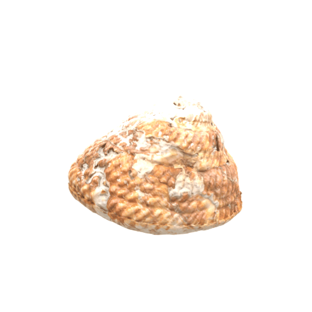
前景 PSNR 32.71 dB · SSIM 0.9927
匹配、点云与指标 →作业 1 的 55,000 个资产清洗，以及作业 2 的 10 个物体重建、匹配、环绕动画与流程对照实验。
每个物体使用独立模型。点击进入，可查看全部匹配、测试图像对照及交互式 SfM 点云。

前景 PSNR 32.71 dB · SSIM 0.9927
匹配、点云与指标 →前景 PSNR 32.14 dB · SSIM 0.9914
匹配、点云与指标 →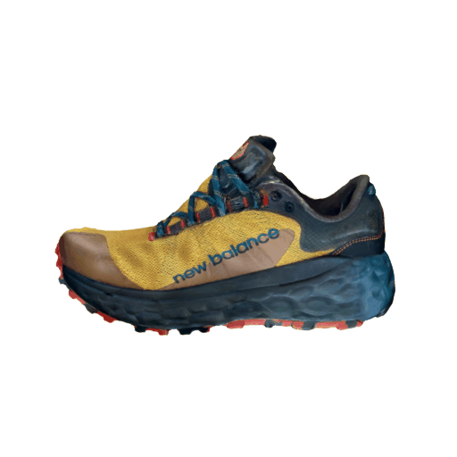
前景 PSNR 32.19 dB · SSIM 0.9913
匹配、点云与指标 →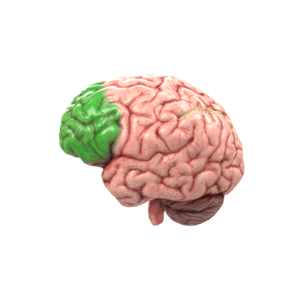
前景 PSNR 29.40 dB · SSIM 0.9832
匹配、点云与指标 →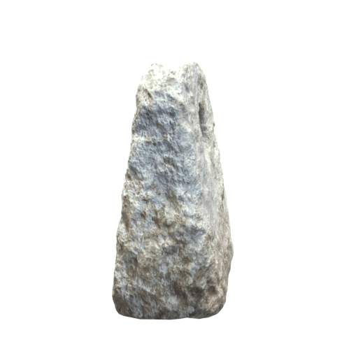
前景 PSNR 38.05 dB · SSIM 0.9964
匹配、点云与指标 →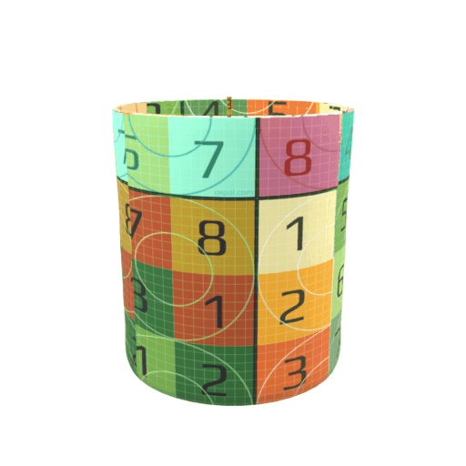
前景 PSNR 34.48 dB · SSIM 0.9915
匹配、点云与指标 →
前景 PSNR 18.92 dB · SSIM 0.9364
匹配、点云与指标 →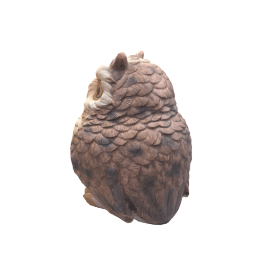
前景 PSNR 32.27 dB · SSIM 0.9864
匹配、点云与指标 →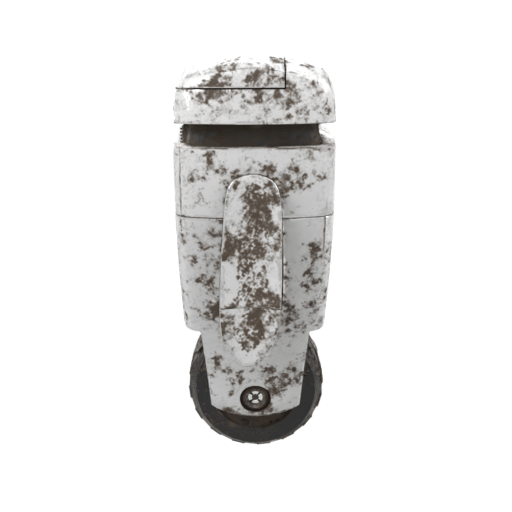
前景 PSNR 30.87 dB · SSIM 0.9881
匹配、点云与指标 →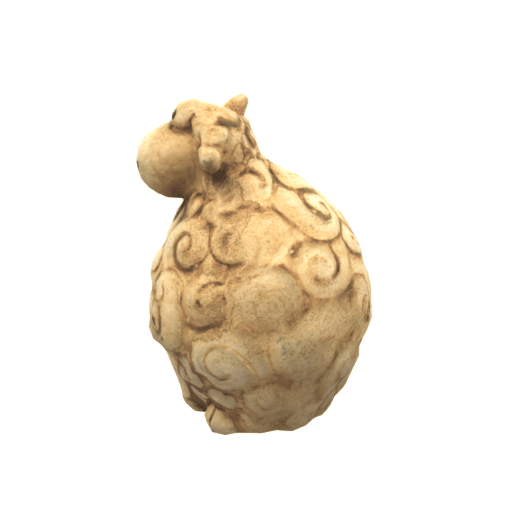
前景 PSNR 37.94 dB · SSIM 0.9954
匹配、点云与指标 →| 物体 | 注册 | 稀疏点 | 重投影 px | 前景 PSNR | SSIM | 高斯数 |
|---|---|---|---|---|---|---|
| 贝壳标本 | 96/96 | 10,237 | 0.297 | 32.708 | 0.99271 | 80,944 |
| 食品罐头 | 96/96 | 7,487 | 0.357 | 32.143 | 0.99139 | 211,790 |
| 彩色跑鞋 | 96/96 | 4,746 | 0.369 | 32.187 | 0.99131 | 105,150 |
| 解剖教学模型 | 96/96 | 8,995 | 0.364 | 29.397 | 0.98317 | 84,515 |
| 石质渔具 | 96/96 | 13,103 | 0.243 | 38.047 | 0.99638 | 120,992 |
| 彩绘蜡烛 | 96/96 | 8,562 | 0.336 | 34.476 | 0.99153 | 178,410 |
| 装饰陶壶 | 96/96 | 9,068 | 0.282 | 18.923 | 0.93640 | 179,200 |
| 猫头鹰摆件 | 96/96 | 9,242 | 0.319 | 32.266 | 0.98645 | 97,462 |
| 机器人模型 | 96/96 | 10,610 | 0.285 | 30.866 | 0.98811 | 153,915 |
| 羊形陶质摆件 | 96/96 | 6,977 | 0.320 | 37.944 | 0.99538 | 60,362 |
训练 7k→30k 的前景 PSNR 平均变化：+1.335 dB；三个代表物体 24→96 视图的变化：+11.981 dB；SfM→真实位姿对照变化：+3.483 dB。
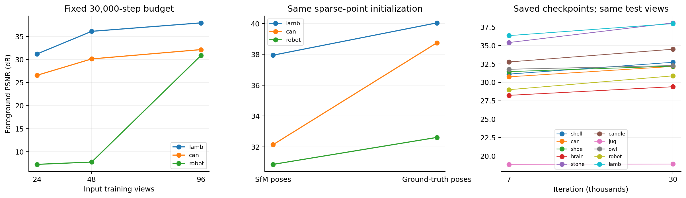
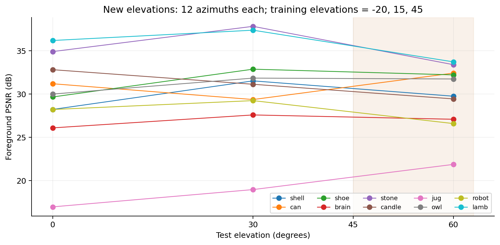
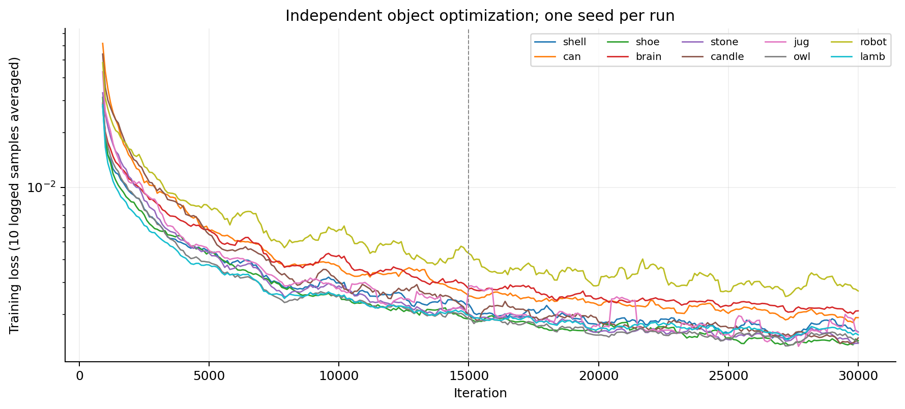
55,000 → 44,597 → 31,614 → 31,607 → 17,150 → 7,819。原始 GLB 保持原路径，输出清单与 SHA。